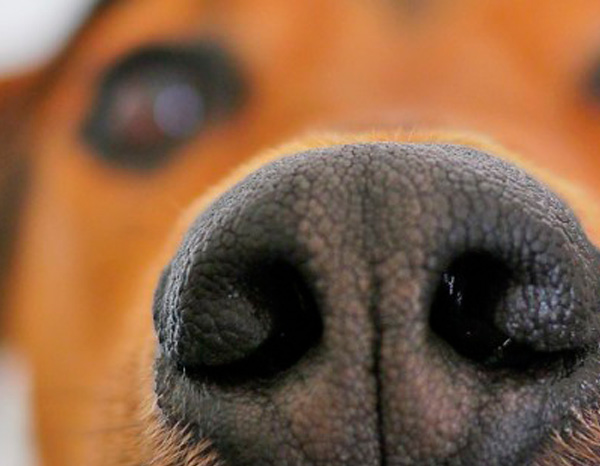

El moquillo en perros, o también llamado distemper, es una enfermedad altamente contagiosa que afecta principalmente a los perros cuando son cachorros, aunque también pueden verse afectados animales como los zorros o los hurones. Los gatos están a salvo ya que no les afecta este tipo de virus en concreto. Ellos pueden padecer otro tipo de virus, el moquillo felino, que nada tiene que ver con el canino. El nivel de peligrosidad de esta enfermedad es alto, ya que puede llegar a ser letal para los perros. El virus es similar al sarampión humano. Hablamos de una de esas enfermedades que meten el miedo en el cuerpo a los propietarios de perros, sobre todo cuando se trata de cachorros o de ejemplares de pocos meses de edad. Esta grave patología vírica presenta un alto nivel de contagio y cuando entra en el organismo afecta, principalmente, a los aparatos digestivo, respiratorio y nervioso, poniendo en riesgo la vida de los animales contagiados.
¿QUÉ ES EL MOQUILLO EN PERROS?
Dentro de las patologías de origen vírico que con alguna frecuencia suelen sufrir los perros el Moquillo, conocido científicamente como Distemper Canino, es una de esas enfermedades que meten miedo con tan sólo escuchar su nombre. El moquillo en los perros, también conocido como distemper o enfermedad de Carré, es un virus que afecta a los perros principalmente y es muy similar al sarampión de las personas. Es la primera causa de muerte de perros por enfermedad infecciosa. Esta enfermedad altamente contagiosa afecta al aparato respiratorio, al sistema digestivo y al sistema nervioso. La mejor medida preventiva frente al distemper canino es la vacunación. Los animales contagiados liberan el virus a través de las secreciones corporales y suelen contagiarse principalmente por la inhalación. Dado que los cachorros no suelen tener todavía desarrollado sus sistema inmunológico, son los más propensos al contagio. Por ello, es fundamental llevar un riguroso plan de vacunación frente al distemper tanto a la madre como al cachorro para evitar esta enfermedad. La enfermedad es más virulenta cuando más desnutrido o en peores condiciones se encuentre el perro, puesto que sus sistema inmunológico está deprimido y tienen menos defensas. Otros, sin embargo, pueden tener síntomas leves o no tener ningún síntoma.
¿CÓMO SE CONTAGIA EL MOQUILLO CANINO? y ¿CUÁLES SON LOS SÍNTOMAS DE MOQUILLO EN LOS PERROS?
El contagio del distemper canino es más fácil de lo que parece. El virus del moquillo se trasmite por secreciones corporales, como son los mocos y las lágrimas, que sueltan nuestros perros por el ambiente. Esas pequeñas gotitas aparentemente inofensivas que aparecen cuando el perro estornuda o tose, están infectadas con el virus y son las que hacen que el contagio se produzca. Entre perros que viven juntos es muy difícil evitar el contagio. Una persona que solo tiene un perro pero que lo saca a pasear y se junta en el parque con otros perros, debe tener cuidado y estar atento, pues ahí también se suelen producir muchos de los contagios. El Moquillo suele tener una mayor incidencia en cachorros y perros jóvenes de tan sólo unos pocos meses de edad, aunque en algunos casos esta enfermedad también puede presentarse por sorpresa en ejemplares adultos. Se trata de una patología muy virulenta y que los veterinarios califican de grave y con un pronóstico reservado. El Moquillo se caracteriza por un alto riesgo de contagio, casi siempre por el contacto con las secreciones lacrimales y nasales de perros infectados, provocando en el organismo una afectación múltiple que implica a los sistemas respiratorio, digestivo y nervioso.
SISTEMA RESPIRATORIO
Es el síntoma más representativo del virus del distemper o moquillo canino. Los perros empiezan a moquear, a toser y a producir secreción ocular (conjuntivitis), acompañada normalmente con hinchazón de los párpados. Esto hace que a veces no puedan ni siquiera abrir los ojos y que les moleste la luz. Presentan dificultad al respirar debido a la obstrucción que les produce la mucosidad. Si el virus afecta al pulmón, puede desembocar en una neumonitis.
SISTEMA DIGESTIVO
Si afecta al sistema digestivo, el virus del distemper o moquillo canino producirá síntomas tales como la gastroenteritis, con vómitos y/o diarrea. Si este es el único síntoma aparente que tiene nuestro perro, no hay que asociarlo directamente con el moquillo canino, pues puede tratarse de otra enfermedad. En este caso el diagnóstico del veterinario será el más apropiado.
SISTEMA CUTÁNEO
Deriva en lo que conocemos como dermatitis. La piel de la nariz y las almohadillas de las patas se endurecen, se secan y se agrietan, provocando una descamación.
SISTEMA NERVIOSO
El moquillo canino, si no se trata a tiempo, en su última fase afectará al sistema nervioso. En este caso los síntomas comunes son los ataques súbitos, los tics nerviosos, las convulsiones y los espasmos musculares que pueden llegar a producir la parálisis de algunas de las extremidades.

LA VACUNA CONTRA EL MOQUILLO CANINO
Vacuna a tu mascota y evita que sufra, como bien dice el dicho siempre es mejor prevenir que curar.
¿CUÁNTO DURA LA VACUNA CONTRA EL MOQUILLO?
La primera vacuna contra el moquillo canino debe administrarse a las cinco o seis semanas de vida y antes de que el cachorro llegue a nuestra casa o conviva con otros perros. Suele ir incluida en la vacuna trivalente: moquillo, sarampión y parainfluenza. Dado que el moquillo es una enfermedad similar al sarampión, es aconsejable vacunarle contra esta patología también.
¿CUÁNDO SE PONE LA VACUNA DEL MOQUILLO?
Algunos cachorros no responden correctamente a la vacuna del moquillo debido a los anticuerpos de la madre que la neutralizan. Sin embargo, la del sarampión sí que es capaz de vencer a los anticuerpos y proteger parcialmente contra el moquillo. Una vez hayan desaparecido los anticuerpos de la madre, la vacuna del moquillo ofrecerá una protección completa a la mascota. Y, a modo recordatorio, es aconsejable realizar la vacunación anual frente al moquillo.
¿EL PERRO SE CURA DEL MOQUILLO?
El moquillo en los perros es una enfermedad grave que conlleva serias complicaciones en el sistema nervioso, llegando a provocar convulsiones, dificultad en los desplazamientos y en la capacidad de controlar sus extremidades. No es una enfermedad curable, pero sí tratable para paliar los síntomas y controlarlos. Afortunadamente, un perro que tiene controlada la enfermedad no va a contagiar a otros perros, puesto que ya no son huéspedes del virus. Recuerda que el veterinario es la mejor persona para asesorarte en cada caso concreto, y si por lo que sea piensas que tu mascota puede estar infectada, hazle una visita, el mejor que nadie sabrá como ayudarte.